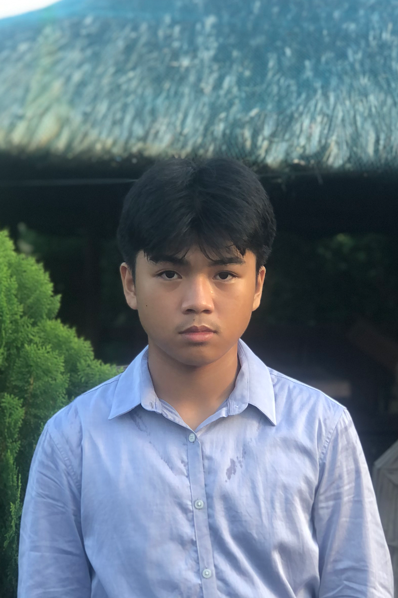

Don Juan

Ako si Don Juan. Ako ang bunso sa tatlong magkakapatid na pinakamahal ng aming Hari. Dahil ako’y mas minamahal ng iba kumpara sa aking mga kapatid, labis akong pinagseselosan ng aking mga kapatid. Sa kasamaang palad, isang gabi, ang aming Hari ay binangungot nang masama at siya’y nagkasakit na hindi magagamot ng normal na gamutan at tanging ang Ibong Adarna lamang ang lunas sa sakit ng aking minamahal na ama.
Ang aking mga kapatid na prinsipe ay naatasang hanapin ito ngunit sila’y hindi pa rin bumabalik pagkalipas ng mahabang panahon kaya’t minabuti kong magpaalam sa aming ama upang hanapin ito. Ako’y naglakbay at may nakitang leproso na bukas-palad kong binigyan ng pagkain, bilang ganti, siya’y tumulong sa akin upang madali kong mahanap ang Ibong Adarna. Nagpatuloy ako sa paglalakad at may natanaw akong bundok at punong makinang sa ituktok nito.
May nakita akong ermitanyo at tinulungan akong makuha ang Ibong Adarna. Ako’y sumunod sa kanyang mga bilin kaya’t matagumpay kong nakuha ang Ibong Adarna. Kasabay nito ang aking mga kapatid na kapwa naging bato sa ilalim ng puno. Masaya sila sapagkat muli nilang nasilayan ang mundo ngunit sa kabila nito sila’y nagtaksil sa akin.
Habang ang aking katawan ay halos gutay-gutay na matapos nila akong bugbugin habang pauwi kami sa Berbanya, pero sila’y nama'y nagsasaya dahil sa isiping sila ang makapagpapagaling sa aming ama. Sa kabutihang palad, tinulungan ako ng ermitanyo upang makabangong muli at makauwi patungo sa aming kaharian. Nang ako’y nakabalik, ang Ibong Adarna ay nagsimulang umawit tungkol sa pangyayaring ‘di inaakala ng kaharian. Nang nalaman nila ang buong istorya, ibig parusahan ang mga taksil kong kapatid ngunit ako’y ‘di sumang-ayon at pinatawad ko nalang sila dahil ayaw ko silang mapahamak.
Pagkatapos ng mga ginawa ko para sa kanila, ako'y muling tinaksil ng sarili kong mga kapatid. Mas pinili kong linsanin ang kaharian dahil ako’y natatakot na maparusahan at nanirahan ako sa isang malayang bundok. Nang ako’y namumuhay na roon, nakita ako ng aking mga kapatid. Iminungkahi nila na manirahan kaming lahat sa bundok na iyon at libutin ito. Ako’y sumang-ayon at may nakita kaming balon na aking narating ang pinakaibaba.
Doon ay may nakita akong prinsesa at ako’y nahulog kaagad dahil sa taglay niyang ganda. Siya’y binabantayan ng Higante at aking pinaslang para sa kanya. Aakyat na kami ngunit ayaw niya iwanan ang kaniyang kapatid. Nang makita ko ang prinsesa, siya’y higit na may taglay na ganda kumpara sa kaniyang mas nakakabatang kapatid kaya ako’y tuluyang nahulog sa kaniya. Siya’y binabantayan naman ng serpyente kaya’t aking pinaslang ito at kaming tatlo ay umakyat sa balon.
Pagkabalik ay may masamang pag-iisip muli ang aking panganay na kapatid. Ako’y muling napagtaksilan nang ako’y pababa sa balon upang kuhanin ang nakalimutang bagay ng prinsesa na ibig ko. Ako’y nasa isang masamang kalagayan na ako’y muntik nang nawalan ng pag-asa. Sa kabutihang palad ay ako’y tinulungan ng isang lobo at ako’y muling gumaling. Nang nakaakyat na ako at pabalik na sa kaharian ay narinig kong umawit ang Ibong Adarna at sinabi nito na huwag na akong bumalik sa aking tahanan at tumungo nalang ako sa dakong silangan.
Sinunod ko ito at marami akong nakaengkwentro na tao na bukas-palad akong tinulungan upang mahanap ang aking nais. Aking nahanap ito at may nakita akong babae na sa kanyang kakaibang taglay na kagandahan ay nahulog ako sa kanya ngunit nang kami’y nagkausap, kailangan ko munang magawa ang mga utos ng kaniyang ama. Ang ibinigay sa aking pitong utos ni Haring Salermo ay hindi kaya ng aking abilidad kaya’t ang si Maria Blanca ay tinulungan ako para maisakatuparan ang mga ito. Nang matapos ang lahat ng ito, ako'y pinapili sa kanyang mga anak upang mapangasawa at ang aking napili ay si Maria Blanca.
Ngunit sa pagiging sakim ng kaniyang ama ay binalak niya akong ibigay at ipakasal sa kanyang kapatid kaya’t kami’y tumakas patungo sa Berbanya. Nang nasa kaharian na kami ay sinumpa kami ng kaniyang ama noong kami’y tumakas na makakalimutan ko si Maria Blanca kapag ako’y nakakita o nakasalat ng isang babae. Sa kabutihang palad ay naalala ko siyang muli, salamat sa tulong ni Maria Blanca at kami’y namuhay nang payapa sa kaniyang kaharian.